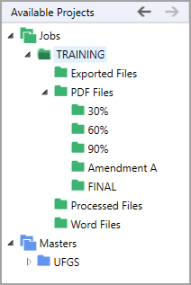

The SpecsIntact Explorer's Available Projects panel features an expandable and collapsible tree view that lists the available Jobs and Masters contained within your connected Working Directories and Connected Masters. Both Jobs and Masters can either be selected or deselected from the SpecsIntact Explorer's Setup menu or you can use the Toolbar, Connect Masters, and Working Directories buttons:
Depending on the functions you performed through the SpecsIntact Explorer, the Available Projects panel tree view when expanded displays other folders below the Job or Master such as Exported Files, PDF Files, Processed Files, and Word Files. The system-generated folders cannot be deleted, except the PDF Files subfolders (e.g., 30%, 60%, 90%, Amendment A, and Final).

The projects within the Available Projects panel govern the content displayed within the Contents panel. This content is dynamically generated and updated in response to the selected folder within the project hierarchy such as the main Jobs or Masters folders, the individual Job or Master folders, or the project subfolders.
 To learn more, refer to the SpecsIntact Explorer's Contents Panel or the View menu Column Headers topics.
To learn more, refer to the SpecsIntact Explorer's Contents Panel or the View menu Column Headers topics.
Initially, the Go Back and Go Forward buttons in the Available Projects panel will be inactive. After making selections, these buttons enable back-and-forth navigation between the last and previously selected Job, Master, or subfolders.
 The Go Back and Go Forward commands can also be executed from the Available Projects panel Right-click menu or keyboard shortcut Alt+Left Arrow to Go Back and Alt+Right Arrow to Go Forward. Closing the SpecsIntact Explorer will reset these settings.
The Go Back and Go Forward commands can also be executed from the Available Projects panel Right-click menu or keyboard shortcut Alt+Left Arrow to Go Back and Alt+Right Arrow to Go Forward. Closing the SpecsIntact Explorer will reset these settings.
Users are encouraged to visit the SpecsIntact Website's Support & Help Center for access to all of our User Tools, including Web-Based Help (containing Troubleshooting, Frequently Asked Questions (FAQs), Technical Notes, and Known Problems), eLearning Modules (video tutorials), and printable Guides.
| CONTACT US: | ||
| 256.895.5505 | ||
| SpecsIntact@usace.army.mil | ||
| SpecsIntact.wbdg.org | ||